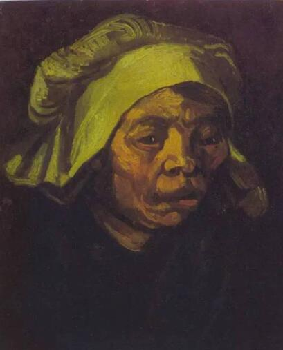
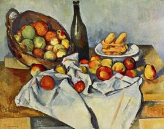

油画派系
后印象主义
精华：尊重印象派的光色成就，施展个人主观情感去改造客观形象。
弱点：一些形式主义过于主观。
后印象派并不算是一个真正的派别，它主要是指印象派后的一些艺术家固然曾经做过印象派的通路人，却走上了一条属于自己的道路。他们的艺术理论和实践在印象派的基础上有别于印象派，他们不满印象派过于客观的描绘世界，不知足于刻板片面的追求光色，不知足于停留于对物体表面光色的爱好上。他们主张表现艺术家的主观世界，夸大作品要抒发艺术家的自我感慨感染和主观感情，以为艺术应当忠实于个人的感慨感染和体验，无需与客观真相完全一致，应当以艺术家的主观情感去改造客观形象，表现铸管化的客观。于是开始尝试对色彩及形体表现性因素的自觉运用，在十九世纪末，后印象派由此此诞生。 后印象派将形式主义艺术施展到极致，几乎不顾及任何题材和内容。在艺术表现上，后印象派更加夸大构成关系，以为艺术形象要异于糊口的物象，用作者的主观感情去改造客观物象，要表现出“主观化了的客观”。后印象派塞尚的画甚至不顾及透视和人体解剖，只是用各种色块堆积成一个个似是而非的形态。他们在尊重印象派光色成就的同时，不是片面追求外光，而是侧重于表现物质的详细性、不乱性和内在结构。后印象派的绘画对现代诸流派的发展有着重大的影响，直接导致了结构主义的诞生。 后印象派为现代油画的发展起到了奠基的作用。以梵·高、塞尚、高更为代表人物。
代表作品
梵·高后印象主义作品《吃土豆的人》
塞尚后印象主义作品《静物》
 